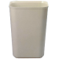
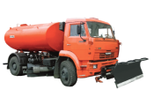
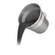
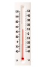

5 этапов
нанесения дорожной разметки
На весь период работ участок дороги ограждают специальными знаками – до полного высыхания новой разметки. В противном случае движущийся транспорт может испортить свежее покрытие.
Этап 1
Подготовка поверхности
01

С дороги удаляют мусор
02

Поливочно-моечная машина
справляется с очисткой
лучше всего
03

Трещины более 6 мм и ямы
заделывают
04

Старую разметку удаляют
с помощью большого напора
воды или срезают 1-2 мм
асфальта
05


Дорогу оставляют просохнуть на 7-10 дней